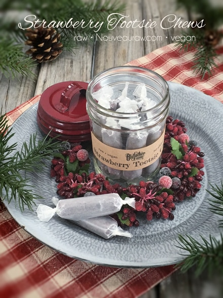

Strawberry Tootsie Chews

~ raw, vegan, gluten-free, nut-free ~
These Strawberry Tootsie Chews are an explosion of tasty, tangy, sweet, Summer strawberry flavor. They have a soft taffy-like texture and will keep well at room temperature.
To create this wonderful strawberry flavor and texture, I use organic strawberry powder. I spent a lot of time designing this recipe, balancing flavor and texture. I haven’t tested using fresh strawberries and if you do give it a try, please keep me posted on how it goes. The flavor won’t be as intense and it will add more liquid to the overall batter.
As I said already, I worked hard to create these special candies for my grandfather who LOVES candy but can’t eat anything hard or crunchy.
A helpful tip when creating these candies is to use “dry” date paste. I know that sounds a bit confusing so let me explain. When creating the date paste, use the least amount of water needed when getting it to that creamy smooth texture. I provided a link below on how I make my date paste, please review it.
I mentioned above that we want the date paste creamy smooth. There is a reason… if the date paste has bits of chunks in it, the batter will clog up the piping tip when making the candy.
For the almond flour, I used fine almond flour, not ground almonds. You can achieve raw fine almond flour by soaking, removing the skins, and dehydrating almonds. Dehydrate them and grind them to a finer flour texture. If you just use ground almonds the candies can turn out grainy. Another way to achieve fine almond flour is too dry the almond pulp after making almond milk. Grind this to a fine powder once dried. If you are not able to do this and 100% raw isn’t your top priority, you can purchase almond flour.
For gift packaging ideas, I used Ball Regular Mouth Half Pint Jars and colored lids. You can check your local department stores for fun shaped jars. If you plan on using sticker labels on the jars, make sure that one side of the jar is smooth so the label will stick smoothly.
Yields 48 (2” candies)
Preparation:
Create the candy batter:
- Remove the pits from the dates as you put them in the measuring cup.
- Be sure to inspect each date as you tear it in half to remove the pit. Mold and insect eggs can infect dried dates. I don’t mean to gross you out, you just need to be made aware of this.
- Place the date paste, almond flour, strawberry powder, beet juice, and salt in the food processor fitted with the “S” blade. Process until it turns into a creamy paste.
Fill the piping bag:
- It is best to use either a canvas or a silicone piping bag. I used the piping tip Ateco #808.
- While holding the bag with one hand, fold down the top with the other hand to form a cuff over your hand.
- Fill the bag 1/2 full. If you overfill the bag, the excess batter may squeeze out the wrong end not to mention that you will have less control of the bag when piping.
- Close the bag by unfolding the cuff and twisting the bag closed. This forces the batter down into the bag.
- “Burping” the bag: Make sure you release any air trapped in the bag by squeezing some of the batter out of the tip into the bowl. This is called “burping” the bag.
- If you don’t remove the air bubbles they will come out while you are piping your straight line and cause blurps and breaks. Best to create a seamless line.
Piping:
- Hold the piping bag tip about 1/4″ above the non-stick sheet, at about a 22-degree angle (half of a 45 ), and slowly pipe the batter from one edge of the dehydrator tray to the other.
- Keep constant pressure on the piping bag as you squeeze out the paste. This will ensure an even thickness of the line.
- After each completed line, stop and retwist the piping bag, working all paste towards the tip. This will eliminate air bubbles in the bag and give you a solid grip.
- Remember: It doesn’t have to be perfect. Just have fun and if you make a mistake, scoop it up, place back in the bag and do it again.
Dehydrate & store:
- Place the tray in the dehydrator and dry at 145 degrees (F) for 1 hour, then reduce to 115 degrees (F) for 16-24 hours.
- Once cooled, cut into 2” lengths and wrap in squares of wax paper.
- I keep mine stored in the fridge for freshness but they can be left out at room temp.
- These candy chews won’t be hard or crunchy.
Culinary Explanations:
- Why do I start the dehydrator at 145 degrees (F). Click (here) to learn the reason behind this.
- When working with fresh ingredients it is important to taste test as you build a recipe. Learn why (here).
- Don’t own a dehydrator? Learn how to use your oven (here). I do however truly believe that it is a worthwhile investment. Click (here) to learn what I use.
Substitutions:
One of the greatest joys when creating raw food recipes is experimenting with different ingredients… a practice that I highly encourage. Daily I get questions regarding substitutions. Of course, we all might have different dietary needs and tastes which could necessitate altering a recipe. I love to share with you what I create for myself, my husband, friends, and family. I spend a lot of time selecting the right ingredients with a particular goal in mind, looking to build a certain flavor and texture.
So as you experiment with substitutions, remember they are what they sound like, they are substitutes for the preferred item. Generally, they are not going to behave, taste, or have the same texture as the suggested ingredient. Some may work, and others may not and I can’t promise what the results will be unless I’ve tried them myself. So have fun, don’t be afraid, and remember, substituting is how I discovered many of my unique dishes.
I found these small bags at a Walgreens (of all places) during
my travels. Check your local Walgreens or craft store.
© AmieSue.com